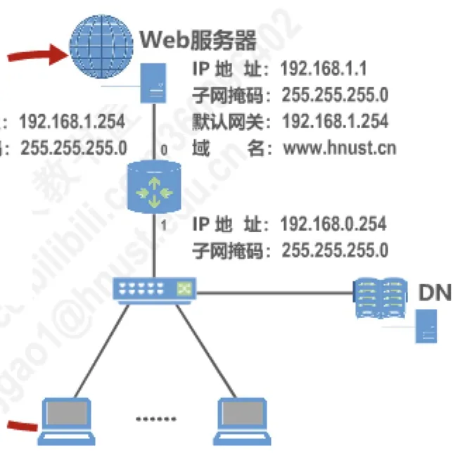
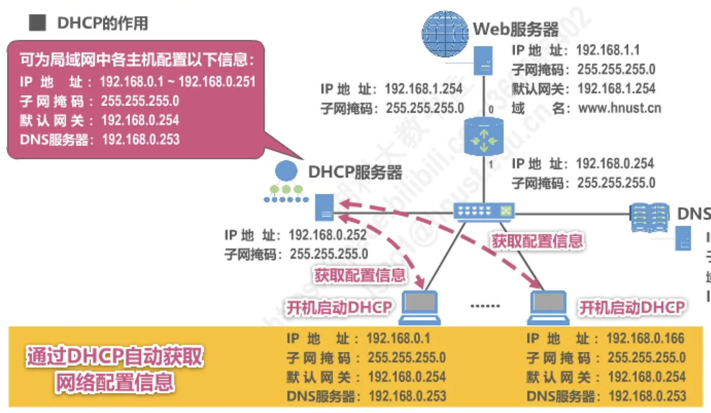
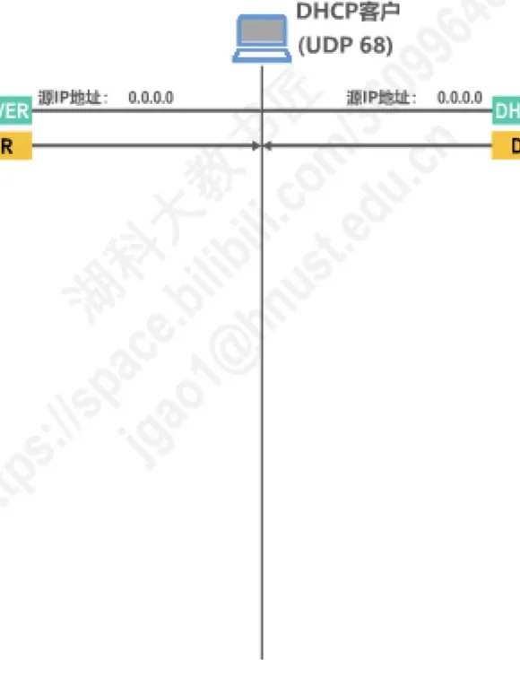
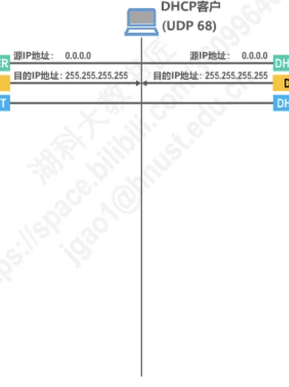
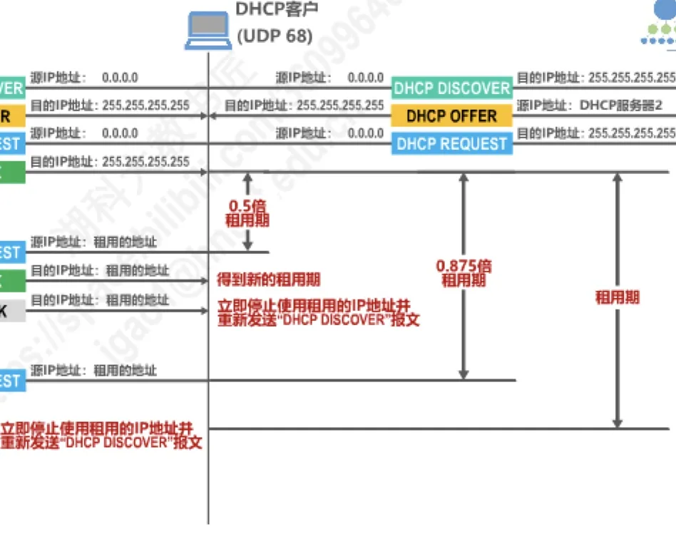
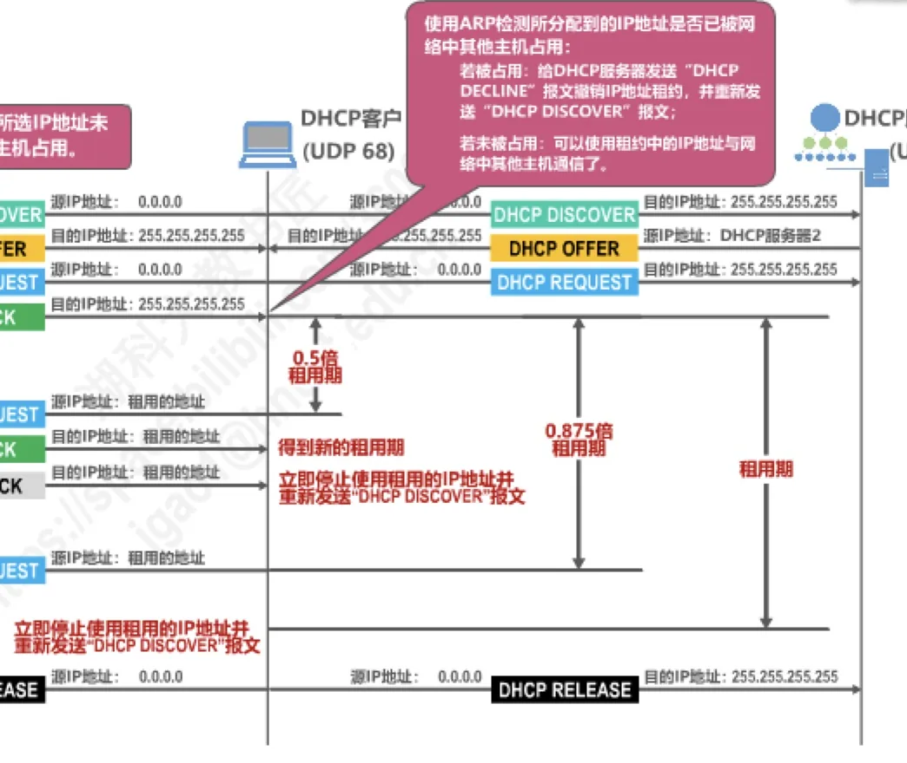
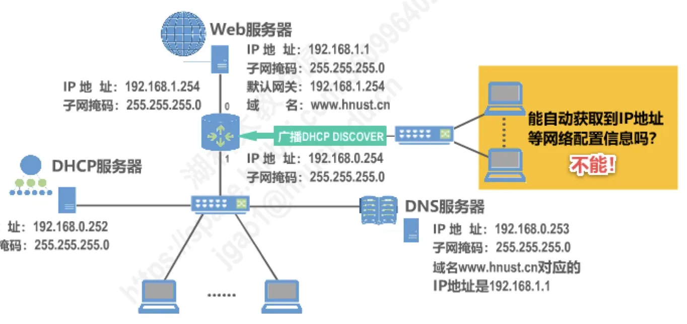
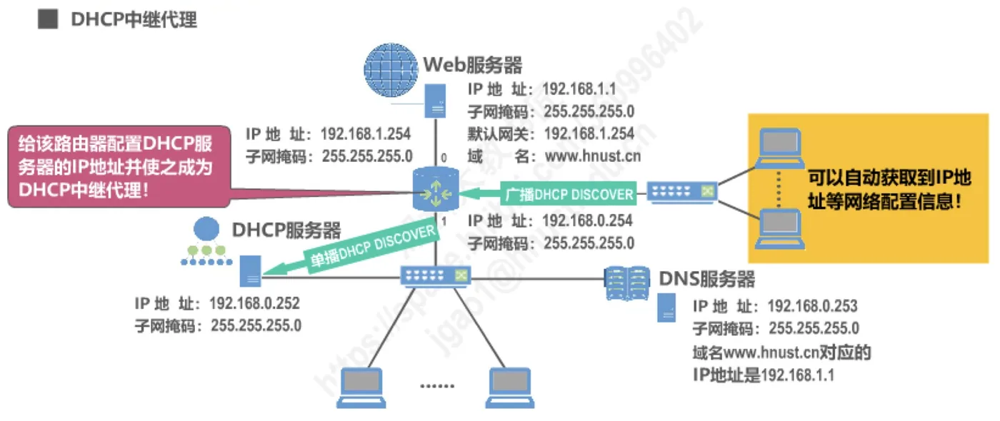

计算机通信与网络 · 第 6 章 应用层
6.3 动态主机配置协议DHCP
一台主机要接入网络并使用网络服务，必须事先配好 IP 地址、子网掩码、默认网关和 DNS 服务器这几项参数；主机一多，逐台手工配置既费事又容易出错。动态主机配置协议 DHCP（Dynamic Host Configuration Protocol）就是为了解决这个问题的应用层协议，它让主机一开机就自动获得这些配置信息，称为「即插即用连网」。本节先看清手工配置的困难，再依次讲 DHCP 的报文与端口、四步交互过程、租用期与续租释放，最后讲中继代理与 DHCP 服务器的位置。
1. 手工配置的困境
先看一个典型的例子。网络中有一台 Web 服务器，地址是 192.168.1.1、子网掩码 255.255.255.0，位于 192.168.1.0 网段；网络中还有一台 DNS 服务器 192.168.0.253，负责把域名 www.hnust.cn 解析成 Web 服务器的地址 192.168.1.1。用户主机位于 192.168.0.0 网段，本网段的出口（默认网关）是路由器接口 192.168.0.254。用户想用域名访问这台 Web 服务器，主机就必须先被配置好，而它需要的参数一项也不能少。

这四项参数各自的取值和作用见表 1。
| 参数 | 例网中的取值 | 作用 |
|---|---|---|
| IP 地址 | 192.168.0.1、192.168.0.166（可分配范围 192.168.0.1～192.168.0.251） | 主机在本网络中的标识，收发的分组都以它为源地址或目的地址 |
| 子网掩码 | 255.255.255.0 | 划出网络前缀，用来判断目的主机是否与本机同在一个网络 |
| 默认网关 | 192.168.0.254 | 本网段的出口；访问 192.168.1.0 网段的 Web 服务器必须经它转发 |
| DNS 服务器 | 192.168.0.253 | 把域名 www.hnust.cn 解析为 Web 服务器的 IP 地址 192.168.1.1 |
四项参数缺一不可：没有 IP 地址根本无法通信；子网掩码写错就分不清目的主机是本地还是远程；没有默认网关，分组出不了本网段；不指明 DNS 服务器，就只能输入 IP 地址而不能用域名访问。麻烦的是，这些参数要在每一台主机上重复设置一遍，正如原讲义所提示的——手工配置工作量大，且容易出错：地址可能被两台主机写成同一个（地址冲突），掩码、网关、DNS 服务器抄错一项就上不了网，主机搬到别的网段还得重新配置，笔记本、手机等临时接入的设备更是负担。于是人们希望把这件事交给网络自己去完成。
2. DHCP 的作用与即插即用连网
DHCP 提供的机制称为即插即用连网（plug-and-play networking）：一台计算机加入新网络时，可以自动获取 IP 地址等网络配置信息，而不需要手工参与。它把「配置参数」集中在服务器一端管理：管理员只要在 DHCP 服务器上规划好一段地址和有关参数，其余主机开机后自行索取即可。
以例网为例，DHCP 服务器可以为局域网中的各主机提供以下信息：IP 地址（在 192.168.0.1～192.168.0.251 中分配）、子网掩码 255.255.255.0、默认网关 192.168.0.254、DNS 服务器 192.168.0.253。主机开机时启动 DHCP 客户程序，主动请求并获取这些配置信息，随后就能像手工配置好的主机一样正常访问网络服务。

从协议的分层看，DHCP 属于应用层协议，是 6.1 节所说的应用层协议之一；它工作的方式正是 6.2 节讲的客户—服务器方式——一方运行服务器程序、集中管理配置信息，另一方运行客户程序、提出请求。它也是主机接入网络后首先要完成的一步：只有先拿到自己的 IP 地址、默认网关和 DNS 服务器地址，主机才能去访问 Web 服务器，也才能向 6.4 节要讲的域名系统请求域名解析。
3. DHCP 的报文、端口与客户—服务器方式
运行 DHCP 服务器程序的一方管理着一段可供分配的 IP 地址（通常称为地址池），负责回答客户请求并指定租期；请求配置的主机则运行 DHCP 客户程序。一个网络里可以有多台 DHCP 服务器（后面例子中就有两台），它们都可以向客户提供地址，客户从中挑选一份。
DHCP 报文在运输层使用用户数据报协议 UDP（User Datagram Protocol）封装：配置信息本身很短，这一步又通常在一个网段内完成，用无连接的 UDP 既够用又省去建立连接的等待。端口号是固定的：DHCP 服务器使用 UDP 端口 67，DHCP 客户使用 UDP 端口 68（端口号与复用、分用的概念见 5.2 节）。这里还有一个特别之处：客户在未获取到 IP 地址时，报文的源 IP 地址只能填 0.0.0.0，因为它此时还没有可用的地址。
DHCP 主要使用以下 6 种报文来实现其功能（表 2）。
| 报文 | 中文名称 | 作用 |
|---|---|---|
| DHCP DISCOVER | DHCP 发现报文 | 客户广播寻找 DHCP 服务器，源 IP 地址为 0.0.0.0，目的 IP 地址为 255.255.255.255 |
| DHCP OFFER | DHCP 提供报文 | 服务器从地址池中选出一个可用地址，连同子网掩码、地址租期、默认网关、DNS 服务器等信息一并提供 |
| DHCP REQUEST | DHCP 请求报文 | 客户广播声明接受了哪一份租约；续租时改为单播发给原来那台服务器 |
| DHCP ACK | DHCP 确认报文 | 服务器确认租约；续租成功时也用它给出新的租用期 |
| DHCP NACK | DHCP 否认报文 | 服务器拒绝请求或不同意续租，客户必须重新发送 DHCP DISCOVER |
| DHCP RELEASE | DHCP 释放报文 | 客户随时解除 IP 地址租约，把地址还给服务器 |
这些报文两两成对，构成了下面要讲的交互过程。
4. DHCP 的工作过程
一台新开机（或刚接入网络）的主机，要经过「寻找—提供—请求—确认」四个步骤才能拿到地址。整个过程很像租房：客户先到处问「谁能租给我一间房」——因为它既不知道服务器在哪里，也没有自己的地址可作源地址，所以只能广播；各服务器分别报出「我这有房，条件是这样」；客户挑定一家，正式提出申请；最后房东确认签约。由于客户还没有 IP 地址，双方只能靠报文中的事务 ID（一次申请事务的编号）和客户的 MAC 地址（Media Access Control address，媒体接入控制地址）来认领属于同一次申请的报文。
（1）寻找 DHCP 服务器 —— DHCP DISCOVER
DHCP 客户广播发送 DHCP 发现报文 DHCP DISCOVER。报文的源 IP 地址填 0.0.0.0，目的 IP 地址填 255.255.255.255，即受限广播地址，只在本地网络内传播；报文中携带事务 ID 和本机的 MAC 地址。之所以采用广播，是因为客户并不知道 DHCP 服务器位于何处、地址是多少，只能在本网段内「喊一声」，让本网段里的所有 DHCP 服务器都能收到这份请求。
（2）提供 IP 地址租用 —— DHCP OFFER
收到 DISCOVER 的服务器从地址池中选出一个尚未分配的 IP 地址，回送 DHCP 提供报文 DHCP OFFER。这个报文的源 IP 地址是服务器自己的地址——所以图中服务器 1 和服务器 2 各自以自身的地址为源地址；目的 IP 地址仍是广播地址，因为客户还没有可用的地址。报文中除了与 DISCOVER 相同的事务 ID，还带上这份租约的配置信息：子网掩码、地址租期、默认网关、DNS 服务器。服务器在提供之前还会用地址解析协议 ARP（Address Resolution Protocol）确认所选地址没有被网络中其他主机占用，避免把已经有人使用的地址再租出去。

如果同时有多台服务器应答，客户就会收到多个 OFFER，它从中挑选一个（一般是先到达的那一个）。
（3）接受 IP 地址租约 —— DHCP REQUEST
客户在收到的若干 OFFER 中选定一份，然后广播发送 DHCP 请求报文 DHCP REQUEST，表明自己接受的是哪一份租约。这个报文仍然以 0.0.0.0 为源 IP 地址、以 255.255.255.255 为目的 IP 地址，内容包含事务 ID、DHCP 客户端 MAC 地址、所接受的租约中的 IP 地址以及提供该租约的 DHCP 服务器端 IP 地址。这里之所以还要广播，一是因为客户此时尚未正式取得地址，二是因为要让所有发过 OFFER 的服务器都知道结果：被选中的服务器准备确认，未被选中的服务器收回自己的提供，把那个地址留给别的主机使用。

（4）确认 IP 地址租约 —— DHCP ACK
被选中的服务器发回 DHCP 确认报文 DHCP ACK，其源 IP 地址是服务器自己的地址，目的 IP 地址仍是广播地址。客户收到 ACK 后还不能马上使用这个地址，它要用 ARP 检测所分配到的 IP 地址是否已被网络中其他主机占用：
- 若被占用：给 DHCP 服务器发送 DHCP DECLINE 报文撤销 IP 地址租约，并重新发送 DHCP DISCOVER 报文；
- 若未被占用：就可以使用租约中的 IP 地址与网络中其他主机通信了。
至此，一台主机从「没有任何配置」到「可以正常联网」的全过程就完成了，而这一切都是自动发生的。
5. 租用期、续租与租约释放
DHCP 分配给客户的并不是永久归其所有的地址，而是一段租用期：服务器在 DHCP OFFER（以及随后的 ACK）中通过「地址租期」字段告诉客户，这个地址可以借用多久。这样做的好处是地址能够循环使用——主机离开网络、关机之后不再使用，地址会自动回到地址池，可以再分配给别的主机，既避免地址被长期闲置占用，也方便网络重新规划。
租用期快到的时候，客户必须向服务器申请续租。按照 DHCP 的一般规则，客户在租用期过半时就会主动发起：这次采用单播，DHCP REQUEST 的源 IP 地址填写自己租用的那个地址，目的 IP 地址则是先前提供该租约的 DHCP 服务器的地址——此时客户已经有地址，也知道该找谁，不必再广播。服务器对续租请求有三种处理方式（图 5）：
- 情况 1：服务器发回 DHCP ACK（源 IP 地址为服务器地址，目的 IP 地址为租用的地址），客户得到新的租用期，可以继续使用原来的地址；
- 情况 2：服务器发回 DHCP NACK，表示不同意续租（例如该地址已被划作他用），客户必须停止使用原来的地址，重新发送 DHCP DISCOVER 申请新地址；
- 情况 3：服务器不响应，客户可以继续使用原来的地址，直到租用期结束为止，租用期一到就必须停止使用并重新申请。

如果客户不再需要这个地址（例如正常关机、离开网络），则可以随时解除 IP 地址租约：向服务器发送 DHCP 释放报文 DHCP RELEASE，目的 IP 地址为广播地址 255.255.255.255，把这个地址提前还给服务器，让它能更早地分配给其他主机。图 6 把整个 DHCP 工作过程收在一张图上：四个交互步骤、租用期内的单播续租以及随时可以发出的 DHCP RELEASE。

6. DHCP 中继代理与服务器的位置
前面讲的广播只在本地网络内传播，这就带来一个新的问题：如果某个网络里没有 DHCP 服务器，该网络中的主机广播 DHCP DISCOVER 也不会有服务器应答。图 7 就是这样一个例子：DHCP 服务器接在 192.168.0.0 网段，而用户主机和 Web 服务器所在的 192.168.1.0 网段没有 DHCP 服务器；主机广播的 DHCP DISCOVER 到达路由器后被丢弃（路由器默认不转发广播），因此该网段的主机无法自动获取 IP 地址等网络配置信息。

解决办法不是给每个网络都装一台 DHCP 服务器，而是使用 DHCP 中继代理（DHCP relay agent）：给连接该网段的路由器配置上 DHCP 服务器的 IP 地址，让它充当代理。这样，本网段主机广播的 DHCP DISCOVER 会被中继代理以单播方式转发给 DHCP 服务器；服务器给出的应答再由中继代理转回给主机。于是该网段的主机同样可以自动获取到 IP 地址等网络配置信息（图 8）。

为什么不干脆在每个网络都放一台 DHCP 服务器？因为那样 DHCP 服务器的数量会太多，管理成本高，地址池也分散。因此现在的做法是：每一个网络至少有一个 DHCP 中继代理（通常是一台路由器），它配置了 DHCP 服务器的 IP 地址信息，作为本网络中计算机与 DHCP 服务器之间的桥梁。换句话说，DHCP 服务器不必与客户处在同一个网段，它可以集中放置在某一个网段里，由各网段的中继代理「代收代转」。这也正好解释了前面那个设计细节：客户发出的第一个报文必须是广播（它不知道服务器在哪里），而中继代理存在的意义，就是让这个走不出本网段的广播能够被送到远处的 DHCP 服务器。
本节小结
- DHCP 是应用层协议，提供即插即用连网机制：主机加入新网络时自动获取 IP 地址、子网掩码、默认网关、DNS 服务器等配置信息，不必手工参与，从而免去逐台配置的工作量和出错风险；
- DHCP 报文在运输层用 UDP 封装，服务器端口 67、客户端口 68，工作方式属于客户—服务器方式；客户未获取到 IP 地址时源 IP 地址用 0.0.0.0，寻找服务器时目的 IP 地址用广播地址 255.255.255.255；
- 6 种报文：DISCOVER（发现）、OFFER（提供）、REQUEST（请求）、ACK（确认）、NACK（否认）、RELEASE（释放）；初次申请按「发现—提供—请求—确认」四步完成，靠事务 ID 和客户 MAC 地址把同一次申请的报文对应起来；
- 地址是「租」来的：服务器给出地址租期，客户在租用期过半时以单播 DHCP REQUEST 请求续租——收到 ACK 得到新租用期、收到 NACK 必须重新申请、服务器不响应则可继续使用到租用期结束；不再需要时用 DHCP RELEASE 随时解除租约；
- 广播出不了本网段，所以每个网络至少配置一个 DHCP 中继代理（通常是一台路由器），由它把广播的 DISCOVER 以单播转发给 DHCP 服务器、再把应答转回，这样 DHCP 服务器就不必在每个网络都设一台。